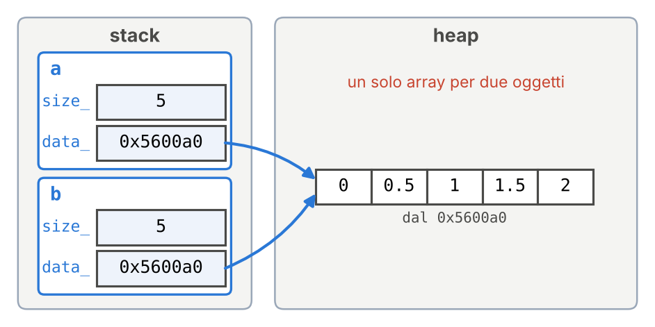
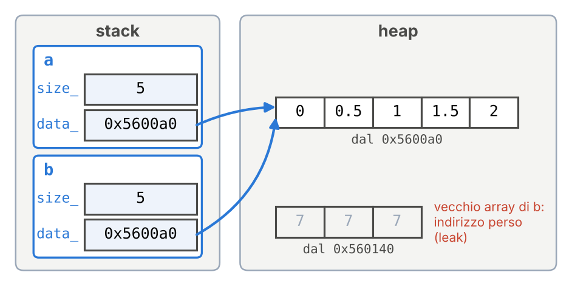
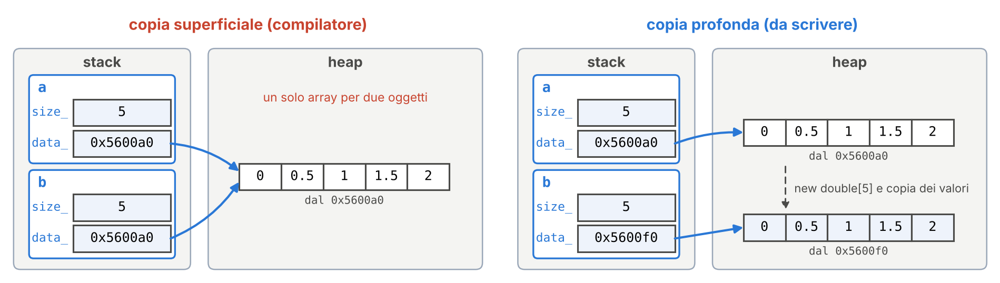

Programmazione Scientifica++: Lezione 10
Deep Copy, Regola del Tre e Overloading degli Operatori
Argomenti di oggi
- Copiare una classe che alloca memoria con
new: la copia superficiale e il double free - La Regola del Tre: distruttore, costruttore di copia, operatore di assegnamento
- Il puntatore
this - Overloading degli operatori:
+e*per i vettori - Le eccezioni: segnalare un errore con
throw - Esercizi: il prodotto per uno scalare; la discesa del gradiente in due dimensioni
Gli argomenti di oggi nel framework
- Copia. Le matrici del framework (
Matrix) sono matrici di Eigen, il cui costruttore di copia e il cui assegnamento fanno già la copia profonda che oggi scriviamo a mano. - Overloading degli operatori. In
DenseLayer::forwardl’uscita dello strato si calcola conoutputs = Wt * (*inputs_ptr);: il*fra due matrici di Eigen è un operatore definito da Eigen, il prodotto righe per colonne. - Eccezioni. Lo stesso
forwardcontrolla che l’ingresso abbia il numero di righe atteso; se no, lancia un’eccezionestd::runtime_errorcon le due dimensioni nel messaggio. - Il puntatore
this. Il messaggio usathis->Nin, il numero di ingressi dell’oggetto su cuiforwardè chiamato; il controllo scrive soloNin, come di solito.
La cartella della lezione
Oggi ogni esempio si scrive e si compila durante la lezione, in un progetto CMake come quello dei laboratori, ma in una cartella a parte.
CMakeLists.txt
cmake_minimum_required(VERSION 3.15)
project(Lezione10)
set(CMAKE_CXX_STANDARD 17)
set(CMAKE_CXX_STANDARD_REQUIRED ON)
set(CMAKE_CXX_FLAGS "${CMAKE_CXX_FLAGS} -Wall")
# AddressSanitizer (Lezione 08)
add_compile_options(-fsanitize=address -g)
add_link_options(-fsanitize=address)
# qui una riga add_executable per esempio- Create la cartella
LEZIONE_10, fuori dabasic_neural_plusplus, e apritela in VS Code. - Createvi il file
CMakeLists.txtqui a sinistra. - Dalla cartella
LEZIONE_10:
cmake -B build.
L’AddressSanitizer mostra gli errori di memoria degli esempi di oggi.
Un eseguibile per esempio
Sopra ogni esempio c’è il nome del suo file. Quando lo incontrate, create il file, copiatevi il codice e aggiungete al CMakeLists.txt la sua riga:
add_executable(copia_superficiale copia_superficiale.cpp)
add_executable(puntatore_this puntatore_this.cpp)
add_executable(tre_membri tre_membri.cpp)
add_executable(vettore_somma vettore_somma.cpp)
add_executable(eccezioni eccezioni.cpp)
add_executable(scalare scalare.cpp Vettore2D.cpp) # esercizio
add_executable(lampo lampo.cpp) # esercizio lampo
add_executable(discesa discesa.cpp Vettore2D.cpp) # esercizioPoi, dalla cartella LEZIONE_10, compilate ed eseguite solo quell’esempio:
cmake -B build rilegge il CMakeLists.txt: senza, --target non trova un esempio appena aggiunto. Con --target si compila solo l’esempio indicato: un esercizio non ancora finito non blocca gli altri. I messaggi citati sono quelli di g++ su Linux; con clang (macOS) il testo cambia, il significato no.
Ripasso: la copia del compilatore
Dalla Lezione 07: se una classe non li dichiara, il compilatore genera il costruttore di copia e l’operatore di assegnamento.
DynamicArray b = a;creabcome copia dia: costruttore di copia.b = a;conbgià esistente: operatore di assegnamento.
Entrambi copiano membro per membro: ogni attributo di a viene copiato nell’attributo corrispondente di b. Di un puntatore copiano l’indirizzo, non i dati a cui punta; un array dichiarato come attributo, come double v[5];, viene invece copiato elemento per elemento.
Dalla Lezione 09: DynamicArray alloca un array nell’heap nel costruttore e lo libera nel distruttore. La Lezione 09 si chiudeva con un avvertimento: questa classe non si può ancora copiare. Oggi vediamo perché, e come si rimedia.
La copia superficiale (shallow copy)
copia_superficiale.cpp
#include <iostream>
class DynamicArray {
private:
int size_;
double* data_;
public:
DynamicArray(int size)
: size_(size), data_(new double[size]) {}
~DynamicArray() { delete[] data_; }
int size() const { return size_; }
void imposta(int i, double v) { data_[i] = v; }
double leggi(int i) const { return data_[i]; }
};
int main() {
DynamicArray a(5);
a.imposta(0, 1.0);
DynamicArray b = a;
b.imposta(0, 9.0);
std::cout << a.leggi(0) << "\n";
return 0;
}La classe è quella della Lezione 09, senza il controllo sugli indici per brevità.
- Riga 19:
bè creato con il costruttore di copia generato dal compilatore, che copiasize_edata_. - Riga 20: si modifica
b. - Riga 21: stampa
9, non1. Modificandobsi è modificatoa. - Riga 23: il programma termina con un errore (slide seguenti).
La copia superficiale: il disegno

a.data_eb.data_contengono lo stesso indirizzo: c’è un solo array, e i due oggetti lo condividono.- Scrivere in
b.data_[0]vuol dire scrivere nell’array dia. - Questa copia si chiama copia superficiale (shallow copy): si copia il puntatore, non l’array.
Il double free, passo per passo
Alla fine del main vengono distrutti a e b, in ordine inverso a quello di creazione (Lezione 09):
- prima
b: il suo distruttore eseguedelete[]sull’indirizzo0x5600a0, e l’array viene liberato; - poi
a: il suo distruttore eseguedelete[]sullo stesso indirizzo, che è già stato liberato.
Liberare due volte la stessa memoria è il double free della Lezione 08. Il programma si interrompe:
- compilato senza opzioni:
free(): double free detected in tcache 2eAborted(Linux),pointer being freed was not allocated(macOS); - compilato con
-fsanitize=address:ERROR: AddressSanitizer: attempting double-free, con la riga deldelete[].
Provate: senza la copia
In copia_superficiale.cpp cambiate la riga 19, DynamicArray b = a;, in DynamicArray b(5);. Cosa stampa il programma? L’errore alla fine c’è ancora?
Stampa 1, senza errori: b ha un array suo. Il problema nasce dalla copia.
L’assegnamento: double free e leak

Con DynamicArray b(3); e poi b = a; l’operatore di assegnamento generato dal compilatore copia size_ e data_ di a in b.
b.data_ora contiene l’indirizzo dell’array dia: alla fine c’è di nuovo il double free.- Il vecchio array di
b, quello di 3 elementi, non è stato liberato e nessuna variabile ne conosce più l’indirizzo: è un memory leak.
La Regola del Tre
Il problema nasce dal distruttore: libera l’array, quindi l’array deve avere un solo proprietario. La copia membro per membro crea due proprietari dello stesso array.
Importante
Regola del Tre: se una classe ha bisogno di uno di questi tre membri, ha bisogno di tutti e tre.
- il distruttore, che libera la risorsa;
- il costruttore di copia, chiamato da
DynamicArray b = a;; - l’operatore di assegnamento, chiamato da
b = a;quandobesiste già.
Il motivo è sempre lo stesso: la classe possiede una risorsa che il compilatore non sa duplicare. Il costruttore di copia e l’operatore di assegnamento scritti da noi devono fare una copia profonda (deep copy): allocare un nuovo array e copiarvi i valori.
La copia profonda: il risultato voluto
Le due copie di DynamicArray b = a;, una accanto all’altra:

- Superficiale:
b.data_riceve l’indirizzo dell’array dia; un solo array per due oggetti. - Profonda:
b.data_riceve l’indirizzo di un array nuovo, in cui si copiano i valori di quello dia. Modificarebnon modificaa, e ogni distruttore libera il proprio array: nessun double free, nessun leak.
Il puntatore this
puntatore_this.cpp
#include <iostream>
class DynamicArray {
private:
int size_;
double* data_;
public:
DynamicArray(int size)
: size_(size), data_(new double[size]) {}
~DynamicArray() { delete[] data_; }
int size() const { return size_; }
// in più rispetto a copia_superficiale.cpp
void stampaIndirizzo() const {
std::cout << this << "\n";
}
};
int main() {
DynamicArray a(5);
std::cout << &a << "\n";
a.stampaIndirizzo();
return 0;
}In ogni metodo this è un puntatore che contiene l’indirizzo dell’oggetto su cui il metodo è chiamato.
- Righe 20 e 21: stesso indirizzo; in
a.stampaIndirizzo(),thisvale&a. *thisè l’oggetto stesso;this->size_è l’attributosize_, di solito scritto solosize_(->: Lezione 06).
Nella classe completa (slide seguente) serve all’operator=: this == &altro e return *this.
Provate: this in due oggetti
In puntatore_this.cpp, dopo la riga 21, aggiungete:
Cosa stampano le due righe nuove?
Due volte lo stesso indirizzo, diverso da quello di a: in b.stampaIndirizzo(), this vale &b. Il metodo è uno solo, this dipende dall’oggetto su cui lo si chiama.
La classe con i tre membri
tre_membri.cpp
#include <iostream>
class DynamicArray {
private:
int size_;
double* data_;
public:
DynamicArray(int size) : size_(size), data_(new double[size]) {}
DynamicArray(const DynamicArray& altro)
: size_(altro.size_), data_(new double[altro.size_]) {
for (int i = 0; i < size_; i++) data_[i] = altro.data_[i];
}
DynamicArray& operator=(const DynamicArray& altro) {
if (this == &altro) return *this;
delete[] data_;
size_ = altro.size_;
data_ = new double[size_];
for (int i = 0; i < size_; i++) data_[i] = altro.data_[i];
return *this;
}
~DynamicArray() { delete[] data_; }
void imposta(int i, double v) { data_[i] = v; }
double leggi(int i) const { return data_[i]; }
};La classe con i tre membri (segue): il main
Stampa 1 9 7: a, b e c hanno tre array distinti.
Compilato con -fsanitize=address, il programma termina senza segnalazioni: nessun double free e nessun leak.
Le prossime slide spiegano il costruttore di copia (righe 9–12) e l’operatore di assegnamento (righe 13–20).
Il costruttore di copia
- La firma è quella della Lezione 07: un costruttore che riceve un oggetto della stessa classe per
constreference. - Nella lista di inizializzazione copia la dimensione e alloca un nuovo array, invece di copiare l’indirizzo.
- Nel corpo copia i valori, uno per uno.
- Un metodo può leggere gli attributi privati di un altro oggetto della stessa classe (Lezione 07): per questo può usare
altro.data_.
È l’unico punto in cui il costruttore di copia scritto da noi differisce da quello del compilatore: data_ riceve un indirizzo nuovo.
L’operatore di assegnamento
Con b già creato, b = a; chiama b.operator=(a), non il costruttore di copia: nel metodo this è &b e altro è a.
- Auto-assegnamento (
a = a;):thise&altrocoincidono. Senza il controllo, ildelete[]libererebbe l’array prima di copiarlo. - Il vecchio array di
bva liberato, altrimenti è il leak visto prima. - Il nuovo array si alloca e si riempie come nel costruttore di copia.
- Il valore restituito è
*this:c = b = a;èc = (b = a), e ciò che restituisceb = adiventa l’argomento dic.operator=(convoidnon compilerebbe). Per reference (Lezione 05), per non fare una copia profonda in più.
Provate: la Regola del Tre
In tre_membri.cpp togliete un membro alla volta, ricompilate ed eseguite; poi rimettetelo.
- Togliete il costruttore di copia (righe 9–12). Cosa stampa il programma?
9 9 7, poi attempting double-free: senza il nostro costruttore di copia,aebcondividono l’array. - Togliete l’operatore di assegnamento (righe 13–20). Cosa stampa?
7 9 7, poi attempting double-free:c = a;copia l’indirizzo, quindicscrive nell’array dia, e il vecchio array dicè perso. - Togliete il controllo dell’auto-assegnamento (riga 14) e aggiungete
a = a;dopo la riga 27. Cosa stampa?
-1.83255e-06 9 7: ildelete[]libera l’array dia, e il nuovo array si riempie copiando daaltro, cioè da se stesso, mai inizializzato. Il numero è il valore con cui l’AddressSanitizer riempie la memoria appena allocata.
Overloading degli operatori
vettore_somma.cpp
#include <iostream>
class Vettore2D {
private:
double x_, y_;
public:
Vettore2D(double x, double y) : x_(x), y_(y) {}
Vettore2D operator+(const Vettore2D& altro) const {
return Vettore2D(x_ + altro.x_, y_ + altro.y_);
}
double getX() const { return x_; }
double getY() const { return y_; }
};
int main() {
Vettore2D v1(1.0, 2.0);
Vettore2D v2(3.0, 4.0);
Vettore2D v3 = v1 + v2;
std::cout << v3.getX() << " " << v3.getY() << "\n";
return 0;
}Riga 8: Vettore2D(...) crea un oggetto senza nome, un temporaneo (Lezione 07), che vive fino alla fine dell’istruzione.
L’operator= è già un esempio di overloading degli operatori: una classe può definire che cosa fanno =, +, -, *, == e quasi tutti gli altri operatori sui suoi oggetti.
- Righe 7–9:
operator+è un metodo.v1 + v2(riga 16) si traduce inv1.operator+(v2). - Restituisce un vettore nuovo, per valore, senza modificare
v1: per questo èconst(Lezione 09). - Stampa
4 6. Si può scrivere anchev1 + v2 + v3.
Overloading degli operatori: le regole
- Si possono ridefinire solo gli operatori che esistono già: non si può creare un operatore nuovo, per esempio
**per la potenza. - Non si può cambiare il significato degli operatori sui tipi fondamentali:
1 + 1fra dueintresta2. - Non si può cambiare il numero di operandi:
+fra due oggetti resta un operatore con due operandi. - La precedenza resta quella solita:
a + b * ccalcola primab * c.
Nota
Conviene definire un operatore solo quando il suo significato è uno solo. vettore * scalare è il prodotto per uno scalare. vettore * vettore potrebbe essere il prodotto scalare, il vettoriale o il prodotto componente per componente: in quel caso un metodo con un nome, dot() o cross(), è più chiaro.
Provate: un operatore che manca
In vettore_somma.cpp, dopo la riga 16, aggiungete Vettore2D v4 = v1 - v2;. Compila?
No: no match for ‘operator-’ (operand types are ‘Vettore2D’ and ‘Vettore2D’). Ogni operatore va definito a parte: operator+ non dà -.
Le eccezioni: throw
eccezioni.cpp
#include <iostream>
#include <stdexcept>
class DynamicArray {
private:
int size_;
double* data_;
public:
DynamicArray(int size)
: size_(size), data_(new double[size]) {}
~DynamicArray() {
delete[] data_;
std::cout << "distruttore\n";
}
double leggi(int indice) const {
if (indice < 0 || indice >= size_) {
throw std::out_of_range("indice non valido");
}
return data_[indice];
}
};Nella Lezione 09 leggi restituiva 0.0 per un indice non valido: un valore che può essere anche un dato.
Riga 17: throw interrompe la funzione e lancia un oggetto della classe std::out_of_range (da <stdexcept>), costruito con il suo messaggio: un’eccezione.
Copia e assegnamento sono omessi: qui l’oggetto non si copia.
Le eccezioni: try e catch
eccezioni.cpp
Output:
distruttore
Errore: indice non valido- Il codice che può lanciare un’eccezione va in un blocco
try; il bloccocatchche segue la riceve, ee.what()restituisce il messaggio. - Riga 25:
leggilancia l’eccezione, e il resto del bloccotry(riga 26) viene saltato.
Le eccezioni e il RAII
Nell’output di try e catch, distruttore compare prima di Errore: ...:
- l’eccezione fa uscire il programma dal blocco
try; - uscendo dal blocco, le sue variabili locali vengono distrutte, quindi
aviene distrutta e il suo distruttore libera l’array; - solo dopo viene eseguito il
catch.
I distruttori vengono eseguiti anche quando si esce da un blocco per un’eccezione: per questo il RAII funziona anche con le eccezioni, e nessun delete[] viene saltato.
Nel Laboratorio 05 la classe Matrix userà throw per gli indici e le dimensioni non validi. Le eccezioni si approfondiscono nella Lezione 19.
Provate: le eccezioni senza catch
In eccezioni.cpp, un esperimento alla volta:
- Togliete
trye il bloccocatch(righe 23 e 27–29). Cosa stampa?
terminate called after throwing an instance of ‘std::out_of_range’, what(): indice non valido, poiAborted(con clang su macOS: libc++abi: terminating due to uncaught exception of type std::out_of_range). Un’eccezione che nessuncatchriceve termina il programma (Lezione 19), e i distruttori non vengono eseguiti:distruttorenon compare. - Rimettete
tryecatch, e alla riga 27 scrivetestd::invalid_argumental posto distd::out_of_range. Cosa succede?
Lo stesso: uncatchriceve solo il tipo di eccezione che indica, e qui nessuncatchricevestd::out_of_range.
Esercizio in classe: vettore per scalare
Scopo: scrivere un operatore come metodo, quando l’operando di destra non è un oggetto della stessa classe ma un double.
Header e main sono dati; in Vettore2D.cpp manca una sola riga.
Create
Vettore2D.hpp,Vettore2D.cppescalare.cppcon il codice delle due slide seguenti, «Il file da completare» ed «Esercizio: header emaindati».Completate
operator*: restituisce un nuovoVettore2Dcon le due componenti moltiplicate perscalare.Aggiungete al
CMakeLists.txtla rigaadd_executable(scalare scalare.cpp Vettore2D.cpp), poi compilate ed eseguite (l’output deve essere15 20):
Il file da completare
Vettore2D.cpp
#include "Vettore2D.hpp"
Vettore2D Vettore2D::operator+(const Vettore2D& altro) const {
return Vettore2D(x_ + altro.x_, y_ + altro.y_);
}
Vettore2D Vettore2D::operator*(double scalare) const {
// da completare (una riga): restituite un Vettore2D con
// componenti x_ * scalare e y_ * scalare
return Vettore2D(0.0, 0.0);
}Come lo scheletro della Lezione 09, il file compila già: prima di completarlo stampa 0 0.
Esercizio: header e main dati
v1 * 5.0 si traduce in v1.operator*(5.0): a sinistra c’è il vettore, a destra il double.
Soluzione dell’esercizio: il codice
Vettore2D.cpp
L’output è 15 20: entrambe le componenti sono state moltiplicate per 5.
5.0 * v1 invece non compila: un metodo ha sempre l’oggetto della classe a sinistra dell’operatore. Per scriverlo serve una funzione libera, fuori dalla classe: Vettore2D operator*(double s, const Vettore2D& v) { return v * s; }.
Esercizio lampo: cosa stampa?
Esercizio lampo: la risposta
Stampa 2 2.
S b = a;usa il costruttore di copia generato dal compilatore: copiaa.pinb.p. I due puntatori contengono lo stesso indirizzo, quello dix.*b.p = 2.0;scrive all’indirizzo contenuto inb.p, cioè inx.- Quindi
xvale2, e anche*a.p, che legge lo stesso indirizzo.
È una copia superficiale, ma qui non è un errore: S non possiede x e non la libera. Diventa un errore quando la classe libera la memoria nel distruttore, come DynamicArray.
Il minimo di una funzione
Addestrare la rete vuol dire cercare il minimo di una funzione di molte variabili, la loss in funzione dei pesi. Il libro del Laboratorio di Calcolo (Barone, Marinari, Organtini, Ricci-Tersenghi, Programmazione Scientifica, capitolo «Metodi di ottimizzazione») tratta lo stesso problema per una funzione \(F(\mathbf{x})\) qualsiasi. Il metodo del gradiente scende lungo \(-\nabla F\):
\[ \mathbf{x}^{(n+1)} = \mathbf{x}^{(n)} - \eta\,\nabla F\big(\mathbf{x}^{(n)}\big) \]
Con \(\eta\) costante è la discesa del gradiente della Lezione 03, e \(\eta\) è il learning rate. Nel Laboratorio 02 l’avete provata su \(E(x) = x^2\), in una dimensione. Ora la portiamo in due, con il caso di prova del libro:
\[ F(x, y) = x^2 + 4y^2, \qquad \nabla F = (2x,\ 8y) \]
con il minimo in \((0, 0)\) e il punto di partenza \((2, 1)\). Con gli operatori di Vettore2D il passo si scrive come la formula: x = x - gradF(x) * eta;
Esercizio: discesa in 2D
Scopo: usare gli operatori di Vettore2D per scrivere la discesa del gradiente in due dimensioni come la formula, e capire perché \(\eta\) ha un valore massimo.
- Partite dalla soluzione dell’esercizio precedente:
Vettore2D.hppeVettore2D.cpp, con+e*per undouble. - Aggiungete alla classe due metodi
const:Vettore2D operator-(const Vettore2D& altro) const;differenza componente per componente;double norma() const;restituisce \(\sqrt{x^2 + y^2}\) (std::sqrt, con#include <cmath>).
- In un file nuovo,
discesa.cpp, scrivete la funzione liberaVettore2D gradF(const Vettore2D& p), che restituisce \((2x,\ 8y)\).
La funzione discesa da completare
In discesa.cpp, dopo gradF, copiate questo scheletro. Mancano tre righe, indicate dai commenti.
discesa.cpp
int discesa(Vettore2D x, double eta, int max_passi) {
for (int n = 1; n <= max_passi; ++n) {
// da completare: il passo, x = x - gradF(x) * eta;
double g = gradF(x).norma();
// da completare: se g < 1e-6 restituite n (convergenza)
// da completare: se g > 1e10 restituite -1 (divergenza)
}
return max_passi;
}Se esaurisce i max_passi passi senza convergere né divergere, la funzione restituisce max_passi.
Esercizio: discesa in 2D (segue)
Completate la funzione
discesadella slide precedente.Nel
maindefinitedouble etas[4] = {0.1, 0.2, 0.24, 0.26};e per ciascunetachiamatediscesa(Vettore2D(2.0, 1.0), eta, 100000). Stampate una rigaeta = <valore>: <passi> passi, oppureeta = <valore>: diverge.Aggiungete
add_executable(discesa discesa.cpp Vettore2D.cpp)alCMakeLists.txt, poi compilate ed eseguite:Perché con
eta= 0.26 la discesa diverge, mentre su \(x^2\) (Laboratorio 02) convergeva? Scrivete \(x^{(n+1)}\) e \(y^{(n+1)}\) in funzione di \(x^{(n)}\) e \(y^{(n)}\).
Soluzione: Vettore2D.hpp
Vettore2D.hpp
#pragma once
class Vettore2D {
private:
double x_, y_;
public:
Vettore2D(double x, double y) : x_(x), y_(y) {}
Vettore2D operator+(const Vettore2D& altro) const;
Vettore2D operator-(const Vettore2D& altro) const;
Vettore2D operator*(double scalare) const;
double norma() const;
double getX() const { return x_; }
double getY() const { return y_; }
};Due dichiarazioni nuove: operator- e norma(). Entrambe sono const, perché leggono le componenti senza modificarle.
Soluzione: Vettore2D.cpp
Vettore2D.cpp
#include "Vettore2D.hpp"
#include <cmath>
Vettore2D Vettore2D::operator+(const Vettore2D& altro) const {
return Vettore2D(x_ + altro.x_, y_ + altro.y_);
}
Vettore2D Vettore2D::operator-(const Vettore2D& altro) const {
return Vettore2D(x_ - altro.x_, y_ - altro.y_);
}
Vettore2D Vettore2D::operator*(double scalare) const {
return Vettore2D(x_ * scalare, y_ * scalare);
}
double Vettore2D::norma() const {
return std::sqrt(x_ * x_ + y_ * y_);
}operator- ricalca operator+.
Soluzione: la discesa
discesa.cpp
#include <iostream>
#include "Vettore2D.hpp"
Vettore2D gradF(const Vettore2D& p) {
return Vettore2D(2.0 * p.getX(), 8.0 * p.getY());
}
int discesa(Vettore2D x, double eta, int max_passi) {
for (int n = 1; n <= max_passi; ++n) {
1 x = x - gradF(x) * eta;
double g = gradF(x).norma();
if (g < 1e-6) return n;
if (g > 1e10) return -1;
}
return max_passi;
}- 1
-
Prima
operator*, poioperator-: il passo si scrive come la formula. Ogni operatore restituisce un temporaneo; l’ultimo viene assegnato ax.
x è passato per valore: discesa lavora su una copia del punto di partenza.
Soluzione: il main
Output:
eta = 0.1: 69 passi
eta = 0.2: 32 passi
eta = 0.24: 191 passi
eta = 0.26: divergePer scendere non serve il valore di \(F\), basta il gradiente. Anche la rete aggiorna i pesi con il solo gradiente della loss; il valore della loss serve a controllare l’addestramento.
Soluzione: il limite su \(\eta\)
Con \(\nabla F = (2x,\ 8y)\) le due componenti scendono separatamente: \(x^{(n+1)} = (1 - 2\eta)\, x^{(n)}\) e \(y^{(n+1)} = (1 - 8\eta)\, y^{(n)}\).
Converge solo se \(|1 - 2\eta| < 1\) e \(|1 - 8\eta| < 1\), cioè \(0 < \eta < 0{,}25\) (su \(x^2\) bastava \(\eta < 1\)).
| \(\eta\) | \(1 - 2\eta\) | \(1 - 8\eta\) | passi |
|---|---|---|---|
| 0,1 | 0,8 | 0,2 | 69 (lenta lungo \(x\)) |
| 0,2 | 0,6 | −0,6 | 32 |
| 0,24 | 0,52 | −0,92 | 191 (oscilla lungo \(y\)) |
| 0,26 | 0,48 | −1,08 | diverge lungo \(y\) |
Il limite lo fissa la direzione più ripida, \(y\). Nella rete, con tante direzioni più o meno ripide, \(\eta\) va scelto con cura (Laboratorio 02). L’esercizio verrà ripreso più avanti (Lezioni 12 e 20).